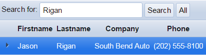

Defining a Quick Search
|

A Quick Search control.
Procedure:
-
Display the Grid > Properties page.
Scroll down to the Quick Search heading in the properties menu.
-
Select the Quick Search > Has Quick Search check box.
Make a selection in the Quick Search > Position list. The control may be:
"Above Grid"
-
"In Grid"
-
If you selected "In Grid" in step 4, select the alignment of the search control in the Quick Search > Alignment list. The options are:
-
"Left"
-
"Center"
-
"Right"
-
Click
 in the Quick Search > Field(s) to search
field to display the Select Fields(s) to Search
dialog. If you select more than one field then the program will search
in all of the specified fields. For example, if you specify Firstname,
Lastname, Company in this property, and then search on 'John', Alpha Anywhere
will search for 'John' in all three fields. Records containing 'John'
in any of these fields will be returned.
in the Quick Search > Field(s) to search
field to display the Select Fields(s) to Search
dialog. If you select more than one field then the program will search
in all of the specified fields. For example, if you specify Firstname,
Lastname, Company in this property, and then search on 'John', Alpha Anywhere
will search for 'John' in all three fields. Records containing 'John'
in any of these fields will be returned. -
Select whether you want to Search in a single field or Search multiple fields.
-
If you selected to search in a single field, select it from the list and click OK.
-
If you selected to search in multiple fields, place checkmarks next to the selected field names and click OK.
-
Optionally, select Quick Search > Allow QBF style to indicate whether QBF style searches be allowed. With QBF style searches, "A,B,C" searches for "A", "B", or "C". "A..C" searches for entries between "A" and "C". "C.." searches for entries greater or equal to "C". "..C" searches for entries less than or equal to "C".
-
Optionally, choose a search style in the Quick Search > Search style list. The options are:
-
"Wildcard" - search for an exact match, ignoring case and length (wildcard characters * and ? are allowed).
-
"Exact" - search for an exact match, ignoring case and length.
-
"Contains" - search for value anywhere in field (no need to use wildcards in search string).
-
"Starts with" - search for value at the beginning of field (no need to use wildcards in search string).
-
Select the control type in the Quick Search > Control type list. The options are:
-
"Textbox"
-
"Dropdownbox"
-
"RadioButton"
-
"Check box"
-
If you selected "Dropdownbox", "RadioButton", or "Check box" in step 9:
-
Click
in the Quick Search > Choices
field to specify the choices to show in the control. -
In the Quick Search > Maximum number of choices field specify the maximum number of choices to show. Set to 0 for no limit. This option is only meaningful if the control is populated dynamically from a database and you don't know how many records the query that populates the control will return. For example, a page that showed 50 choices for a check box control would be unwieldy, and you would want to limit the number of choices shown.
-
Optionally, select Quick Search > Has 'ShowAll' radio button. This is only applies if the control type property is set to "Radiobutton". Specify if the radio buttons should include a button to show all records. This is necessary to turn off the search after you have done a quick search. With other control types, you can turn off the search by doing a search on a blank value.
-
If you enable the Quick Search > Has 'ShowAll' radio button, specify the ShowAll button label.
-
Optionally, specify the initial selection in the Quick Search > Initial selection field. Leave this field blank if all records should be shown when the Grid is initially displayed. If you specify a value, then when the Grid is initially displayed it will be appropriately filtered (according to the search query). For example, say that your Quick Search does searches on a State field, and when the Grid is displayed initially, you want to show records for "MA".
-
Optionally, click
in the Quick Search > Control inline
style field to specify the inline style for the Quick Search control. -
If you selected "Dropdownbox" in step 9, specify the Quick Search > Dropdownbox height. If the height is greater than 1, you can allow the user to select multiple entries.
-
If you selected a value greater than 1 in step 15, choose the Quick Search > Dropdownbox select style. Specify if the user can select multiple entries, or just a single entry.
-
If you selected "Textbox" in step 9:
-
Specify the width of control in the Quick Search > Textbox size field.
-
Specify the maximum number of characters that the user can enter into the Quick Search > Textbox maximum length field. Set to -1 for no limit.
-
If you selected "RadioButton" or "Check box" in step 9, specify the orientation of the Quick Search control in the Quick Search > Orientation field. The options are:
-
"Horizontal"
-
"Vertical"
-
If you selected "Dropdownbox", "RadioButton", or "Check box" in step 9, in the Quick Search > Auto submit field specify whether the search should be performed immediately, or only when the user clicks the Search button.
-
If auto submit in step 19 is not selected, specify the label for the Search button in the Quick Search > Search button label field. This is This is the button that the user clicks to perform the Quick Search.
-
Specify the Quick Search > Quick Search label. This is the text that appears to the left of (or above) the search control.
-
Optionally, click
to specify the Quick Search > Quick
Search label style. -
Optionally, select Quick Search > Has freeform layout. This will allow you to specify any HTML for the text that surrounds the Quick Search.
Freeform layout. -
If you want a freeform layout for the Quick Search, in the Quick Search > freeform layout field click
to display the
Freeform Column Layout dialog. You can specify any
HTML for the text that surrounds the Quick Search.
Examples
The following example shows a text Quick Search field embedded in the grid. In this case the Quick Search field has been defined as a combo box showing unique values from the Sales Rep table field.

In the following example the search field shows unique values from the Payment field as radio button selections. The current selection is "MasterCard", which was set to correspond to a value of "MCard" in the table. In this case the Quick Search field is outside the grid component.

See Also
Creating a Grid Component, Setting Grid Properties
Limitations
Web publishing applications only.